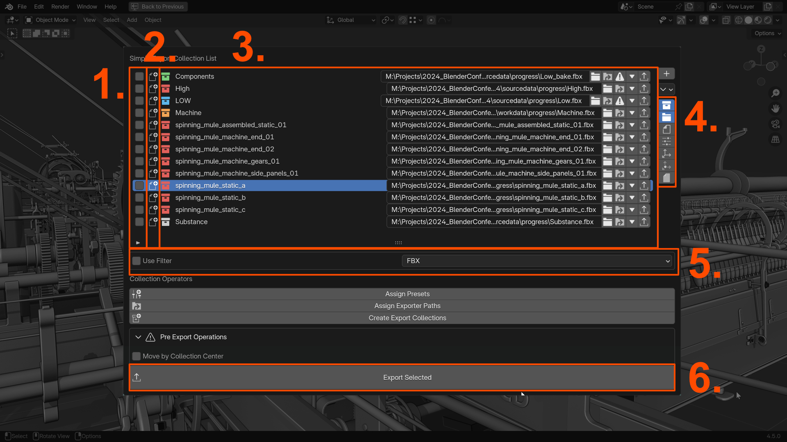

UI Overview
The Simple Export UI integrates seamlessly into various areas of Blender's interface.
- Preferences: Located in Blender Preferences, this section stores global settings shared across all files, such as default paths, presets, hotkeys, and UI options.
- N-Panel: Accessible in the 3D Viewport, the N-Panel provides quick access to the Export List and key operations.
It can be toggled with the
Nkey. - Properties Panel (Output): Found in
Properties → Output. It features the same Export List and operations as the N-Panel. - Popup Panel: Provides a streamlined view of the Export List and key operations like assigning paths and presets.
Accessible via a hotkey (Default:
Shift + Alt + E) or easily assignable to the Quick Favorites. - Outliner Menu: Use the Right-Click Menu in the Outliner to export selected collections or assign paths and presets.
- 3D View Menu: A Simple Export menu can be accessed by right-clicking in the 3D Viewport. This menu provides quick access to export operations.
- Info Popups: Display feedback or error messages after key operations for clarity and troubleshooting.
The Export List
The Export List is available in the N-Panel, Properties Panel or the Popup Panel. It displays all export collections and provides tools for managing them.

List Elements
- Selection: Toggle collection selection.
- Status: Displays the collection's state (e.g., New, Edit, Locked).
- Export Collection Info: Information about the export collection, including its name, filepath, root object, file format, and location based on the visibility settings of 4.
- Visibility Settings : Choose what information to display in the Export List.
- Show Collection Name: Displays the collection name.
- Show Filepath: Displays the export filepath.
- Show File Name: Displays the file name used for export.
- Show Collection Settings Displays various collection settings.
- Show Root Object: Displays the root object of the collection.
- Show Collection Offset: Displays the collection instance offset.
- Show File Format: Displays the file format used for export.
- Filter: Allows you to filter the exporters by file format. More features are planned.
- Export Collections Exports all selected collections.
Filter
- Exporter Type: Filter by the export type.
- Alphabetical Order: Sort collections alphabetically.
- Select/Deselect All: Manage collection selection.
Export List Visibility Settings
TODO: - Gif with visibility settings
Operations
Batch operations allow users to apply settings or actions to multiple export collections simultaneously.
- Assign Presets: Apply presets to selected collections.
- Assign Filepaths: Assign file paths to selected collections.
- Export Selected: Export all selected collections.
Operations can be accessed from different locations in the UI and will affect if they are performed on the entire Export List or only a single collection.

- Collection Actions The small arrow inside the UIList allows you to access the collection actions. These operations for setting the filepath, assigning presets and different visibility, and removing options affect a single collection.
- Export Collection The Export Collection button exports this collection.
- UIList Operations These actions affect the UIList and select or deselect all or create a new export collection.
- Batch Operations The Batch Operations apply to all selected collections of the export list.
Simple Export Panel
This is the main panel for managing export collections, formats, and settings. It is available in the N-Panel or Properties Panel. It contains the selection of the used export settings and an Export List.
- Export Preset: Select the export preset for the current export format. The addon ships with presets for Godot, Unreal, Unity and more. You can also create your own presets.
- Export List: Displays the Export List, which contains all export collections and all operations outlined in the next section.
- Simple Export Defaults: You can also see the Simple Exports Defaults here.This allows you to create your own Simple Exporter presets that can then be used for creating export collections and selected in the preset menu.
Select Presets:
Simple Export Defaults
The Simple Export Defaults allow you to create your own presets for the Simple Exporter. These presets can then be used to create export collections and selected in the preset menu.
- Export Preset: The preset menu allows you to select the export preset. In contrast to the Simple Export Panel, you can create new presets here or delete existing ones.
- Export Format: The export format menu allows you to select the export used for this preset and newly created export collections.
- Collection Name: The collection name contains prefix and suffix options as well as the option to use the blend file name as a prefix. Newly created export collections will use these naming settings.
- Export Path: The export path menu allows you to define how the export paths should look and provides options to specify absolute, relative paths or options to work with mirrored folder structures.
- File Name: This has similar options to the collection name, but for the file name.
- Export Preset: The export preset allows you to specify existing export presets to be applied to collection exporters. They can be created with the regular blender exporters or use one of the presets shipped with the addon.
- Collection Settings: Specify parent collection, color and if root objects, preset and filepath should be assigned on creation of the export collection.
Properties Panel (Output)
The Simple Export Panel and Simple Export Defaults can also be found in Properties → Output. They provide the same
functionality as the N-Panel equivalents.
Pre Export Operations
Warning
These settings can only be applied when this addon is installed. They will not be performed when using the regular Blender exporter.

- Move to Origin: This is currently the only global pre export operation. It moves the collection to the origin based on the collection offset. This is useful for exporting collections that need to be at the origin for the export to work correctly, such as when exporting to Unreal Engine or Unity.
Outliner
Right-click in the Outliner to perform export-related tasks. Outliner -> Right Click -> Simple Export.
- Add Exporter to Collection: Add an Exporter with all specified settings to the collection.
- Batch Operations:
Preferences
The preferences provide mostly the same settings as the Simple Export Defaults, but they are global settings that apply
to all files. They can be found in Edit → Preferences → Add-ons → Simple Export.
It allows you to set up default export formats, presets, paths, filename, collection name, collection settings that will be used when by default when opening a new Blender scene. The main difference to the Simple Export Defaults is that you can specify the default preset for each export format.

Specify which presets should be applied to the individual file formats by default.